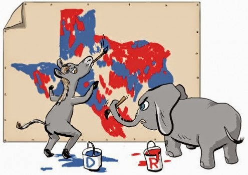

A Gerrymander is a voting district that is designed to serve some political purpose. The name refers to both a salamander and Eldridge Gerry, whose newly created voting district about 200 years ago was said to resemble a salamander. Within the past 10 years, databases for voter characterization as well as tools for precise map drawing have made it possible to create congressional districts that favor the party responsible for the creation of the districts. Redistricting is done in states where census data requires a change in the number of delegates in the state, and the 2010 census triggered redistricting in a number of states. Many of these redistricting efforts resulted in a shift in the political representation in the states. As the realization of the impact of these changes has grown, various technical approaches to the issue have been proposed, some as quantitative measures of the presence of Gerrymandering, others as legal challenges to redistricting, and yet others as draft bills in Congress to minimize the effect of future redistricting. The system to be developed in this project will allow for the generation of congressional district boundaries without any political influence.
The generation process of the system should combine smaller districts (e.g., polling districts or state assembly districts so that the resulting districts adhere to the following goals or constraints identified by Jacobson & Carson:
This application is available on GitHub:
Irrational Thinking
Source: Blog